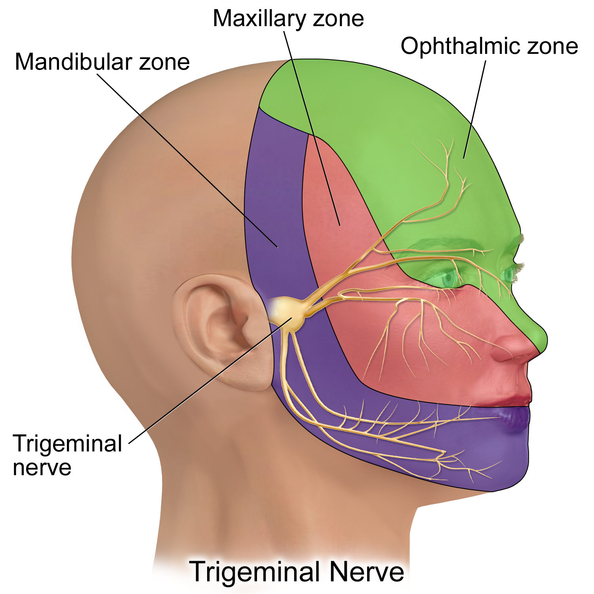

Q1. Dor 10 min, 25×/dia, mulher, com autonômicos. Âncora:
Comparação chocante
Minutos, vezes ao dia e a droga-âncora
Mesma família de dor, relógios diferentes — salva × hemicrania × neuralgia.
Qualidade igual, tempo diferente
Diagnósticos diferenciais principais da salva: hemicrania paroxística e neuralgia do trigêmeo. Hemicrania também é TAC (dor intensa ± autonômicos); mudam duração e recorrência.
Hemicrania + indometacina
Mais comum em mulher. Duração 2–30 min (vs 15–180 da salva). Frequência 1–20/dia, até 40/dia. Âncora: indometacina — crise e profilaxia. Se for decorar uma coisa, decore a droga.
Neuralgia choque V2/V3
Um pouco mais comum em mulher. Duração <2 min; recorrência 1–50/dia. Relato clássico: “choque” ou fisgada no trajeto do trigêmeo. Ramos: V1 oftálmico, V2 maxilar, V3 mandibular. Clássico: V2 e/ou V3; V1 possível, menos clássico.
Sem autonômico típico na prova
Na prova, neuralgia aparece sem sintoma autonômico típico (lacrimejamento, hiperemia); na vida real, manifestações autonômicas podem ocorrer, mas não são o padrão cobrado. Droga clássica: carbamazepina.
Jovem → esclerose múltipla
Se neuralgia surge em jovem, deve-se ampliar a investigação de doença desmielinizante, especialmente esclerose múltipla.
Tabelão rápido
| Característica | Salva | Hemicrania | Neuralgia |
|---|---|---|---|
| Sexo | ♂ (estimativa clássica 9:1) | ♀ | ♀ um pouco |
| Duração | 15–180 min | 2–30 min | <2 min |
| Frequência/dia | 1–8 | 1–20 (até 40) | 1–50 |
| Autonômico | sim | sim (TAC) | não (prova) |
| Âncora | O₂ + verapamil | Indometacina | Carbamazepina |

Bruce Blaus / Blausen Medical Communications. Trigeminal nerve cutaneous zones. Wikimedia Commons — CC BY-SA 4.0 · fonte
V1, V2, V3 — onde o choque corre
Mapa dos territórios cutâneos do trigêmeo. A neuralgia clássica corre em V2 e/ou V3; V1 é possível, menos canônico.
Quiz
Q2. Neuralgia do trigêmeo na prova — marca correta: